Changes in PRIMAP-hist v2.6_final compared to v2.5.1_final for Belgium
2024-09-24
Johannes Gütschow
Change analysis for Belgium for PRIMAP-hist v2.6_final compared to v2.5.1_final
Overview over emissions by sector and gas
The following figures show the aggregate national total emissions excluding LULUCF AR6GWP100 for the country reported priority scenario. The dotted linesshow the v2.5.1_final data.
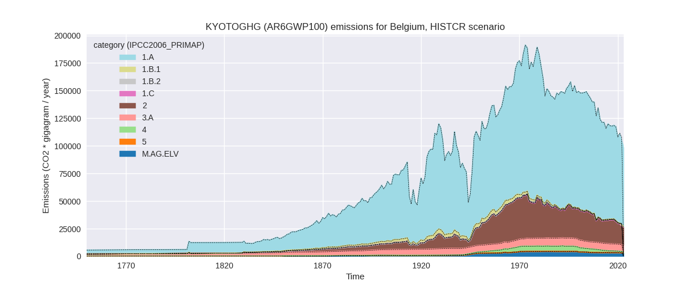
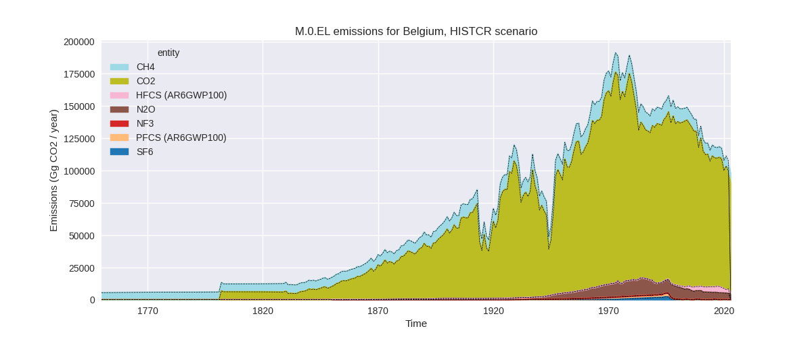
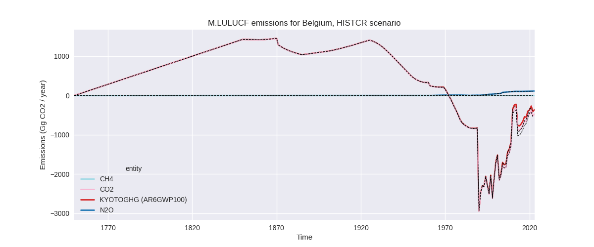
The following figures show the aggregate national total emissions excluding LULUCF AR6GWP100 for the third party priority scenario. The dotted linesshow the v2.5.1_final data.
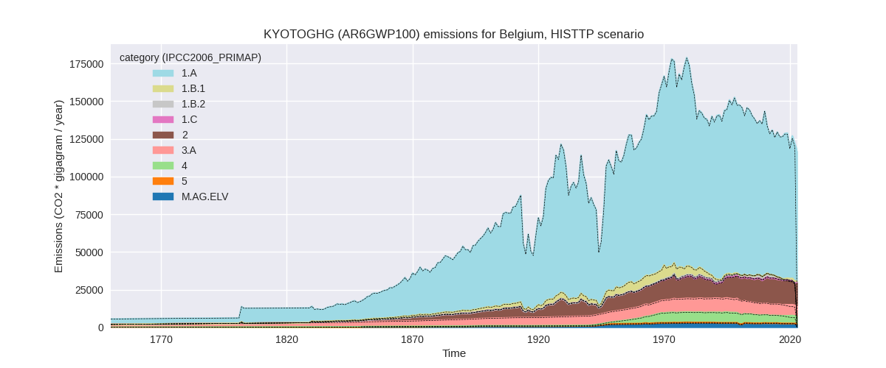
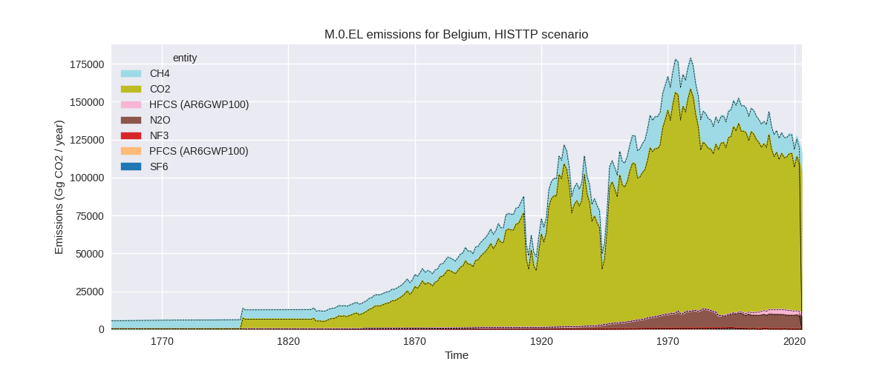
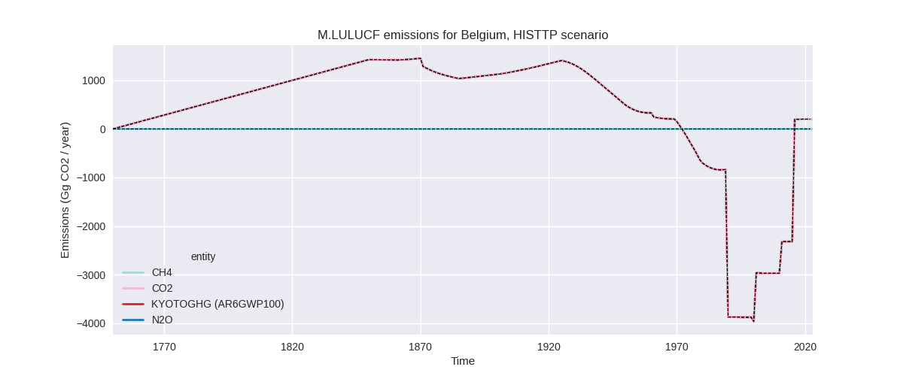
Overview over changes
In the country reported priority scenario we have the following changes for aggregate Kyoto GHG and national total emissions excluding LULUCF (M.0.EL):
- Emissions in 2022 have changed by -3.2%% (-3399.66 Gg CO2 / year)
- Emissions in 1990-2022 have changed by -0.1%% (-114.84 Gg CO2 / year)
In the third party priority scenario we have the following changes for aggregate Kyoto GHG and national total emissions excluding LULUCF (M.0.EL):
- Emissions in 2022 have changed by 1.7%% (2019.79 Gg CO2 / year)
- Emissions in 1990-2022 have changed by 0.2%% (213.19 Gg CO2 / year)
Most important changes per scenario and time frame
In the country reported priority scenario the following sector-gas combinations have the highest absolute impact on national total KyotoGHG (AR6GWP100) emissions in 2022 (top 5):
- 1: 1.A, CO2 with -1856.83 Gg CO2 / year (-2.4%)
- 2: 2, HFCS (AR6GWP100) with -863.34 Gg CO2 / year (-25.0%)
- 3: 2, CO2 with -323.88 Gg CO2 / year (-2.3%)
- 4: M.AG.ELV, N2O with -157.78 Gg CO2 / year (-5.1%)
- 5: 2, PFCS (AR6GWP100) with -73.71 Gg CO2 / year (-38.8%)
In the country reported priority scenario the following sector-gas combinations have the highest absolute impact on national total KyotoGHG (AR6GWP100) emissions in 1990-2022 (top 5):
- 1: 2, HFCS (AR6GWP100) with -59.06 Gg CO2 / year (-2.4%)
- 2: 1.A, CO2 with -45.40 Gg CO2 / year (-0.0%)
- 3: 2, PFCS (AR6GWP100) with -11.31 Gg CO2 / year (-1.5%)
- 4: 2, CO2 with -9.98 Gg CO2 / year (-0.1%)
- 5: M.AG.ELV, N2O with -4.52 Gg CO2 / year (-0.1%)
In the third party priority scenario the following sector-gas combinations have the highest absolute impact on national total KyotoGHG (AR6GWP100) emissions in 2022 (top 5):
- 1: 1.A, CO2 with 1240.60 Gg CO2 / year (1.4%)
- 2: 4, CH4 with 1140.74 Gg CO2 / year (32.7%)
- 3: 2, CO2 with -202.34 Gg CO2 / year (-2.6%)
- 4: 2, HFCS (AR6GWP100) with -188.61 Gg CO2 / year (-6.6%)
- 5: 2, PFCS (AR6GWP100) with 17.02 Gg CO2 / year (223.8%)
In the third party priority scenario the following sector-gas combinations have the highest absolute impact on national total KyotoGHG (AR6GWP100) emissions in 1990-2022 (top 5):
- 1: 4, CH4 with 168.74 Gg CO2 / year (3.1%)
- 2: 1.A, CO2 with 48.62 Gg CO2 / year (0.0%)
- 3: 2, CO2 with -5.91 Gg CO2 / year (-0.1%)
- 4: 2, HFCS (AR6GWP100) with -5.72 Gg CO2 / year (-0.3%)
- 5: 5, N2O with 3.28 Gg CO2 / year (0.9%)
Notes on data changes
Here we list notes explaining important emissions changes for the country. ’' means that the following text only applies to the TP time series, while means that it only applies to the CR scenario. Otherwise the note applies to both scenarios.
- Lower energy CO2 in 2022 (CR) is from EEA2024 data. Higher energy CO2 in 2022 (TP from higher EI data)
- HFCs are lower in 2022 and cumulatively because the downward trend of the lasts years is continued which was not fully picked up by the extrapolation used in v2.5.1 (CR and TP)
- Cement CO2 is lower in 2022 due to a decline in emissions not modeled by the Andrew cement data used in v2.5.1
- Agricultural N2O is lower in 2022 because of a downward trend in emissions in 2022 which was not modeled by extrapolation.
- Waste emissions changes in the TP time-series are due to the removal of FAOSTAT data.
Changes by sector and gas
For each scenario and time frame the changes are displayed for all individual sectors and all individual gases. In the sector plot we use aggregate Kyoto GHGs in AR6GWP100. In the gas plot we usenational total emissions without LULUCF. ## country reported scenario
2022
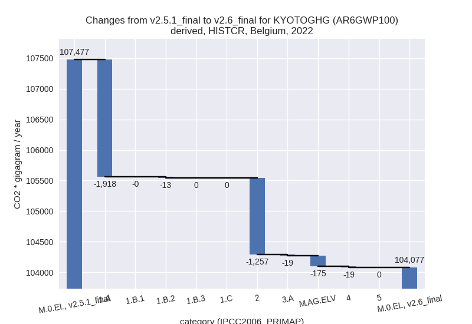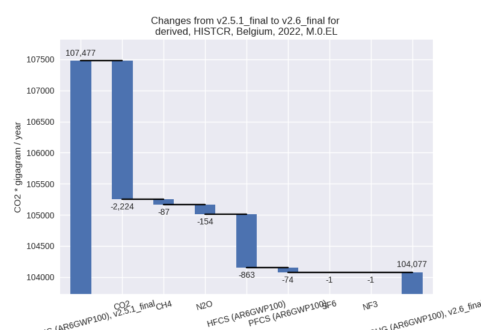
1990-2022
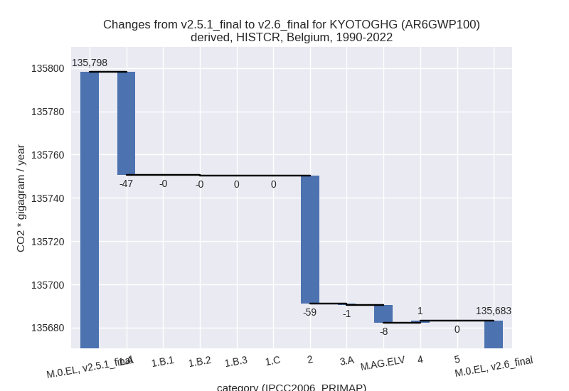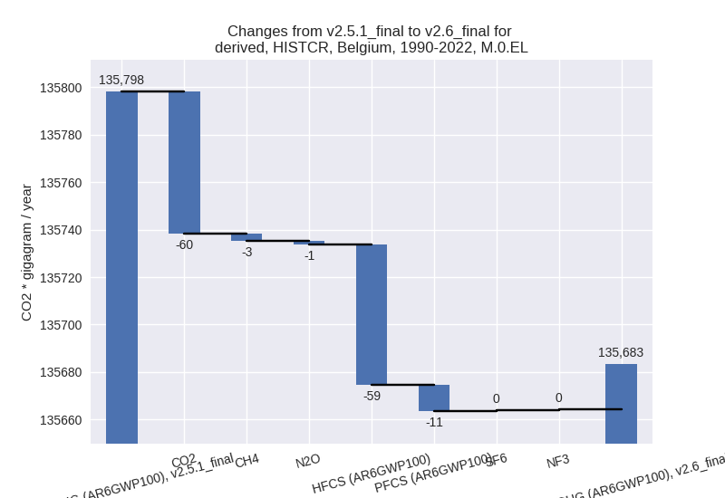
third party scenario
2022
 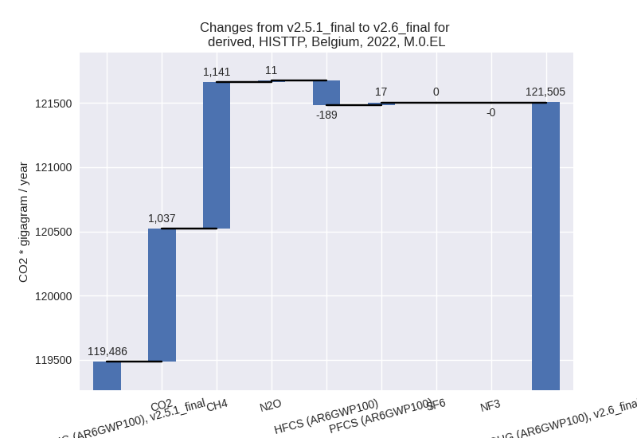
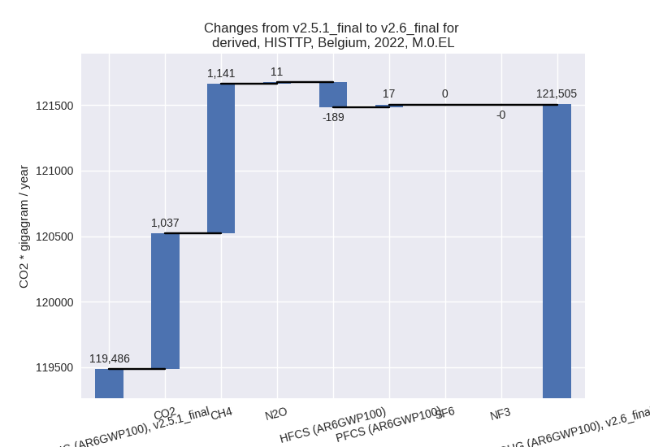
1990-2022
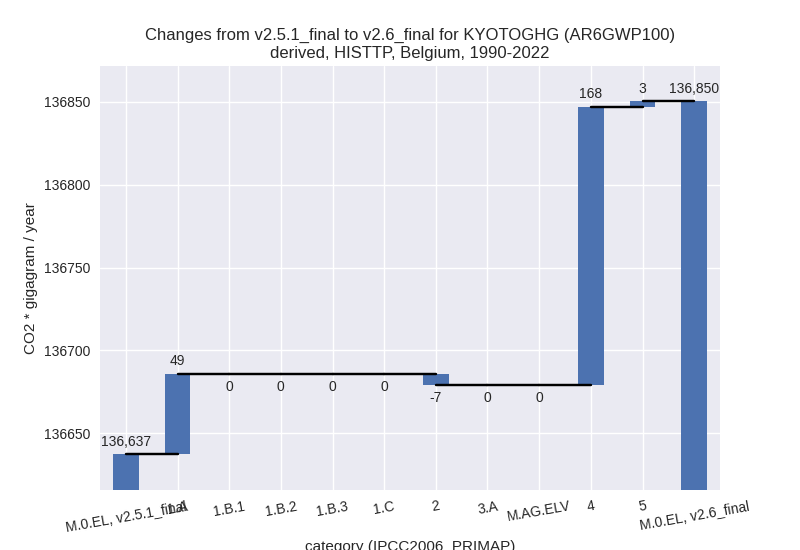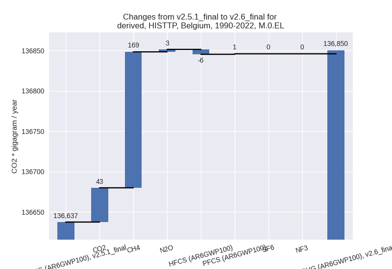
Detailed changes for the scenarios:
country reported scenario (HISTCR):
Most important changes per time frame
For 2022 the following sector-gas combinations have the highest absolute impact on national total KyotoGHG (AR6GWP100) emissions in 2022 (top 5):
- 1: 1.A, CO2 with -1856.83 Gg CO2 / year (-2.4%)
- 2: 2, HFCS (AR6GWP100) with -863.34 Gg CO2 / year (-25.0%)
- 3: 2, CO2 with -323.88 Gg CO2 / year (-2.3%)
- 4: M.AG.ELV, N2O with -157.78 Gg CO2 / year (-5.1%)
- 5: 2, PFCS (AR6GWP100) with -73.71 Gg CO2 / year (-38.8%)
For 1990-2022 the following sector-gas combinations have the highest absolute impact on national total KyotoGHG (AR6GWP100) emissions in 1990-2022 (top 5):
- 1: 2, HFCS (AR6GWP100) with -59.06 Gg CO2 / year (-2.4%)
- 2: 1.A, CO2 with -45.40 Gg CO2 / year (-0.0%)
- 3: 2, PFCS (AR6GWP100) with -11.31 Gg CO2 / year (-1.5%)
- 4: 2, CO2 with -9.98 Gg CO2 / year (-0.1%)
- 5: M.AG.ELV, N2O with -4.52 Gg CO2 / year (-0.1%)
Changes in the main sectors for aggregate KyotoGHG (AR6GWP100) are
- 1: Total sectoral emissions in 2022 are 76400.22 Gg
CO2 / year which is 73.4% of M.0.EL emissions. 2022 Emissions have
changed by -2.5% (-1930.71 Gg CO2 /
year). 1990-2022 Emissions have changed by -0.0% (-47.81 Gg CO2 / year). For 2022 the
changes per gas
are:
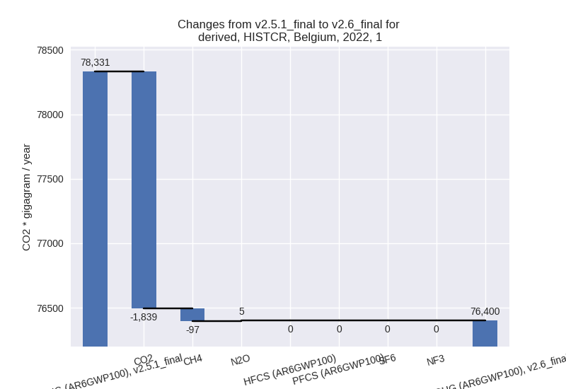
The changes come from the following subsectors:- 1.A: Total sectoral emissions in 2022 are 75758.15
Gg CO2 / year which is 99.2% of category 1 emissions. 2022 Emissions
have changed by -2.5% (-1917.81 Gg
CO2 / year). 1990-2022 Emissions have changed by -0.0% (-47.42 Gg CO2 / year). For 2022 the
changes per gas
are:
There is no subsector information available in PRIMAP-hist. - 1.B.1: Total sectoral emissions in 2022 are 43.74 Gg CO2 / year which is 0.1% of category 1 emissions. 2022 Emissions have changed by -0.6% (-0.27 Gg CO2 / year). 1990-2022 Emissions have changed by -0.0% (-0.01 Gg CO2 / year).
- 1.B.2: Total sectoral emissions in 2022 are 598.33
Gg CO2 / year which is 0.8% of category 1 emissions. 2022 Emissions have
changed by -2.1% (-12.63 Gg CO2 /
year). 1990-2022 Emissions have changed by -0.1% (-0.38 Gg CO2 / year). For 2022 the
changes per gas
are:
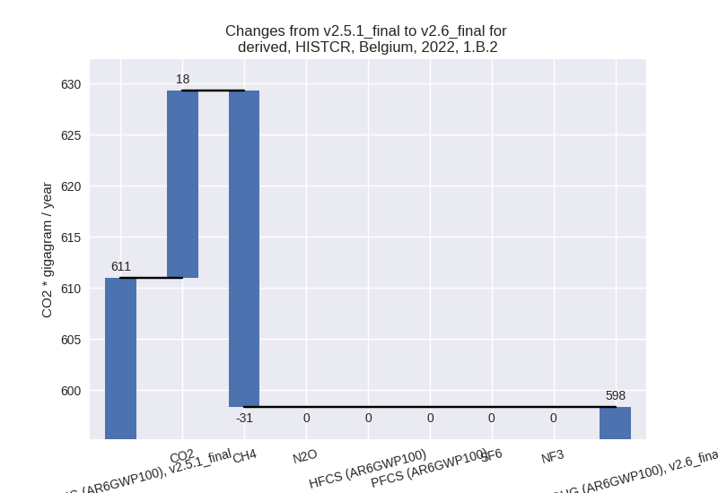
There is no subsector information available in PRIMAP-hist.
- 1.A: Total sectoral emissions in 2022 are 75758.15
Gg CO2 / year which is 99.2% of category 1 emissions. 2022 Emissions
have changed by -2.5% (-1917.81 Gg
CO2 / year). 1990-2022 Emissions have changed by -0.0% (-47.42 Gg CO2 / year). For 2022 the
changes per gas
are:
- 2: Total sectoral emissions in 2022 are 17272.80 Gg
CO2 / year which is 16.6% of M.0.EL emissions. 2022 Emissions have
changed by -6.8% (-1256.58 Gg CO2 /
year). 1990-2022 Emissions have changed by -0.2% (-59.30 Gg CO2 / year). For 2022 the
changes per gas
are:
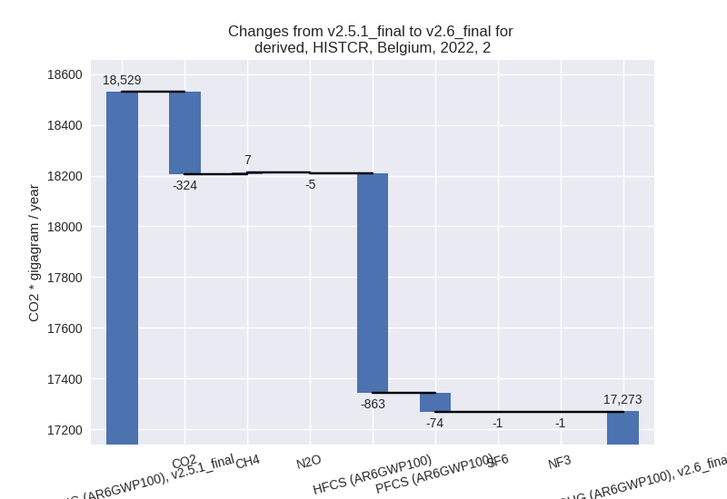 - M.AG: Total sectoral emissions in 2022 are 9227.27
Gg CO2 / year which is 8.9% of M.0.EL emissions. 2022 Emissions have
changed by -2.1% (-193.74 Gg CO2 /
year). 1990-2022 Emissions have changed by -0.1% (-8.84 Gg CO2 / year). For 2022 the
changes per gas
are:
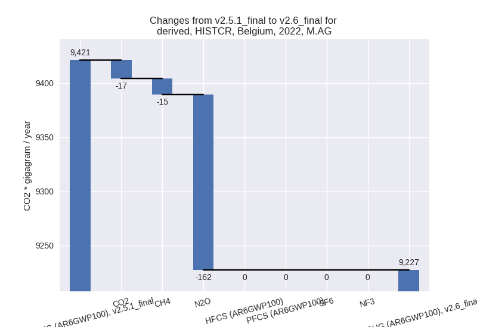
The changes come from the following subsectors:- 3.A: Total sectoral emissions in 2022 are 6121.66 Gg CO2 / year which is 66.3% of category M.AG emissions. 2022 Emissions have changed by -0.3% (-18.99 Gg CO2 / year). 1990-2022 Emissions have changed by -0.0% (-0.61 Gg CO2 / year).
- M.AG.ELV: Total sectoral emissions in 2022 are
3105.61 Gg CO2 / year which is 33.7% of category M.AG emissions. 2022
Emissions have changed by -5.3%
(-174.75 Gg CO2 / year). 1990-2022 Emissions have changed by -0.2% (-8.24 Gg CO2 / year). For 2022 the
changes per gas
are:
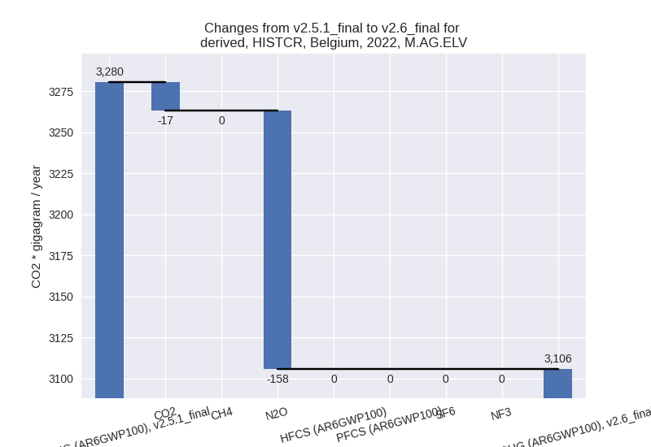
There is no subsector information available in PRIMAP-hist.
- 4: Total sectoral emissions in 2022 are 1176.79 Gg CO2 / year which is 1.1% of M.0.EL emissions. 2022 Emissions have changed by -1.6% (-18.64 Gg CO2 / year). 1990-2022 Emissions have changed by 0.0% (1.12 Gg CO2 / year).
- 5: No data
third party scenario (HISTTP):
Most important changes per time frame
For 2022 the following sector-gas combinations have the highest absolute impact on national total KyotoGHG (AR6GWP100) emissions in 2022 (top 5):
- 1: 1.A, CO2 with 1240.60 Gg CO2 / year (1.4%)
- 2: 4, CH4 with 1140.74 Gg CO2 / year (32.7%)
- 3: 2, CO2 with -202.34 Gg CO2 / year (-2.6%)
- 4: 2, HFCS (AR6GWP100) with -188.61 Gg CO2 / year (-6.6%)
- 5: 2, PFCS (AR6GWP100) with 17.02 Gg CO2 / year (223.8%)
For 1990-2022 the following sector-gas combinations have the highest absolute impact on national total KyotoGHG (AR6GWP100) emissions in 1990-2022 (top 5):
- 1: 4, CH4 with 168.74 Gg CO2 / year (3.1%)
- 2: 1.A, CO2 with 48.62 Gg CO2 / year (0.0%)
- 3: 2, CO2 with -5.91 Gg CO2 / year (-0.1%)
- 4: 2, HFCS (AR6GWP100) with -5.72 Gg CO2 / year (-0.3%)
- 5: 5, N2O with 3.28 Gg CO2 / year (0.9%)
Changes in the main sectors for aggregate KyotoGHG (AR6GWP100) are
- 1: Total sectoral emissions in 2022 are 91809.22 Gg CO2 / year which is 75.6% of M.0.EL emissions. 2022 Emissions have changed by 1.4% (1240.60 Gg CO2 / year). 1990-2022 Emissions have changed by 0.0% (48.62 Gg CO2 / year).
- 2: Total sectoral emissions in 2022 are 15039.03 Gg
CO2 / year which is 12.4% of M.0.EL emissions. 2022 Emissions have
changed by -2.4% (-370.70 Gg CO2 /
year). 1990-2022 Emissions have changed by -0.0% (-6.69 Gg CO2 / year). For 2022 the
changes per gas
are:
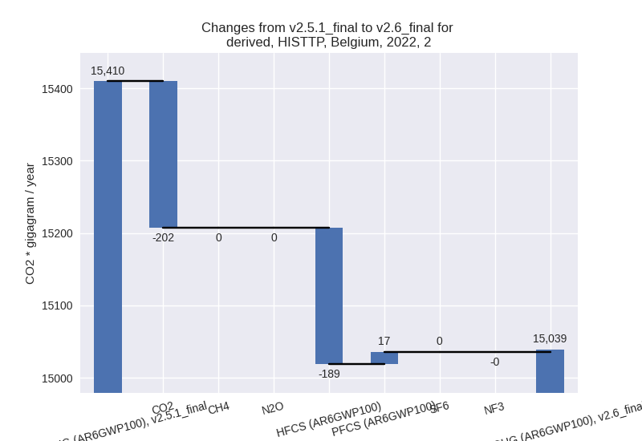 - M.AG: Total sectoral emissions in 2022 are 9507.72 Gg CO2 / year which is 7.8% of M.0.EL emissions. 2022 Emissions have changed by 0.0% (0.00 Gg CO2 / year). 1990-2022 Emissions have changed by 0.0% (0.00 Gg CO2 / year).
- 4: Total sectoral emissions in 2022 are 4927.47 Gg
CO2 / year which is 4.1% of M.0.EL emissions. 2022 Emissions have
changed by 30.3% (1146.44 Gg CO2 /
year). 1990-2022 Emissions have changed by 3.0% (167.99 Gg CO2 / year). For 2022 the
changes per gas
are:
For 1990-2022 the changes per gas are:
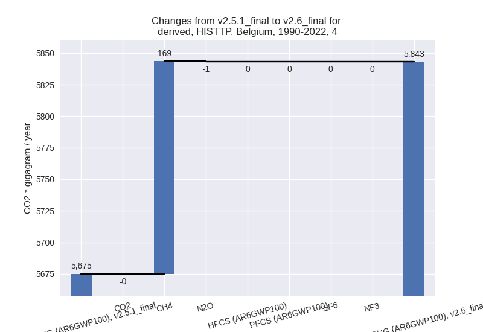 - 5: Total sectoral emissions in 2022 are 221.92 Gg CO2 / year which is 0.2% of M.0.EL emissions. 2022 Emissions have changed by 1.6% (3.46 Gg CO2 / year). 1990-2022 Emissions have changed by 0.9% (3.28 Gg CO2 / year).